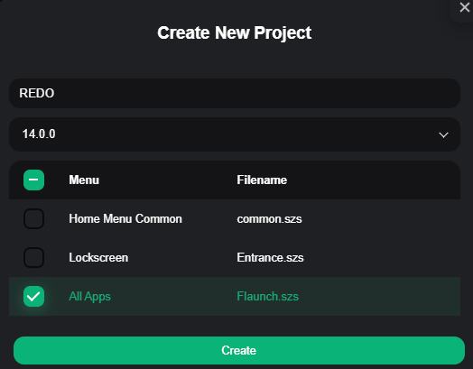
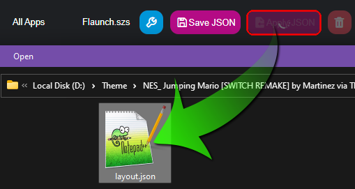
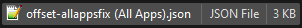
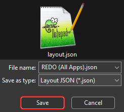

LayoutKit  ¶
¶
Open LayoutKit and make a + New project
Give that project a name e.g REDO
select Firmware Version and choose 14.0.0
then select All Apps
finally click the Create button on the bottom

Click on Apply JSON and locate layout.json you extracted from the .nxtheme file

Now Repeat the step above and apply offset-allappsfix (All Apps).json

Now Click on Save JSON and save the new json
